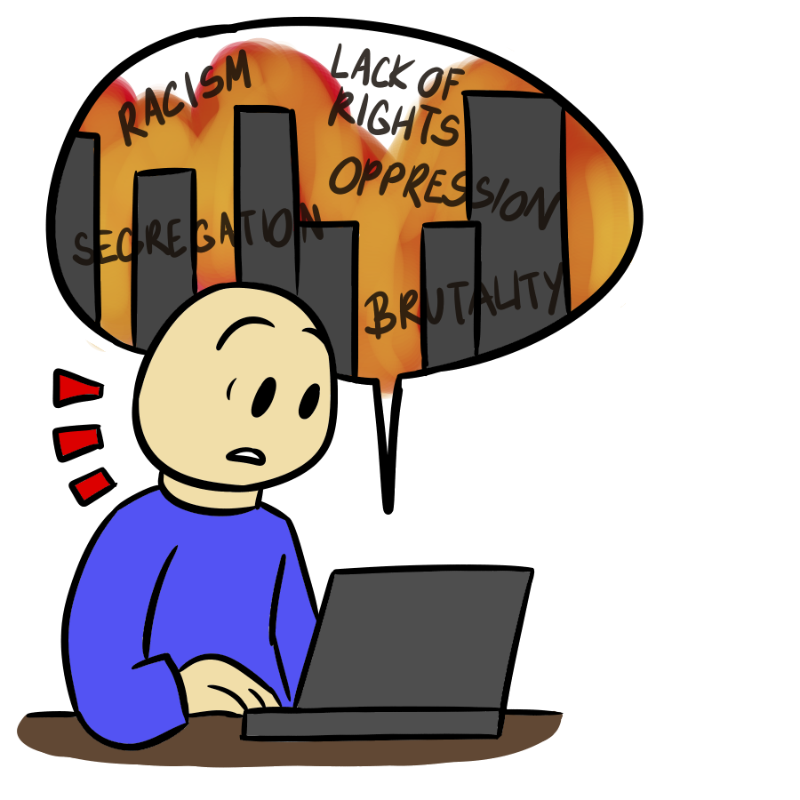
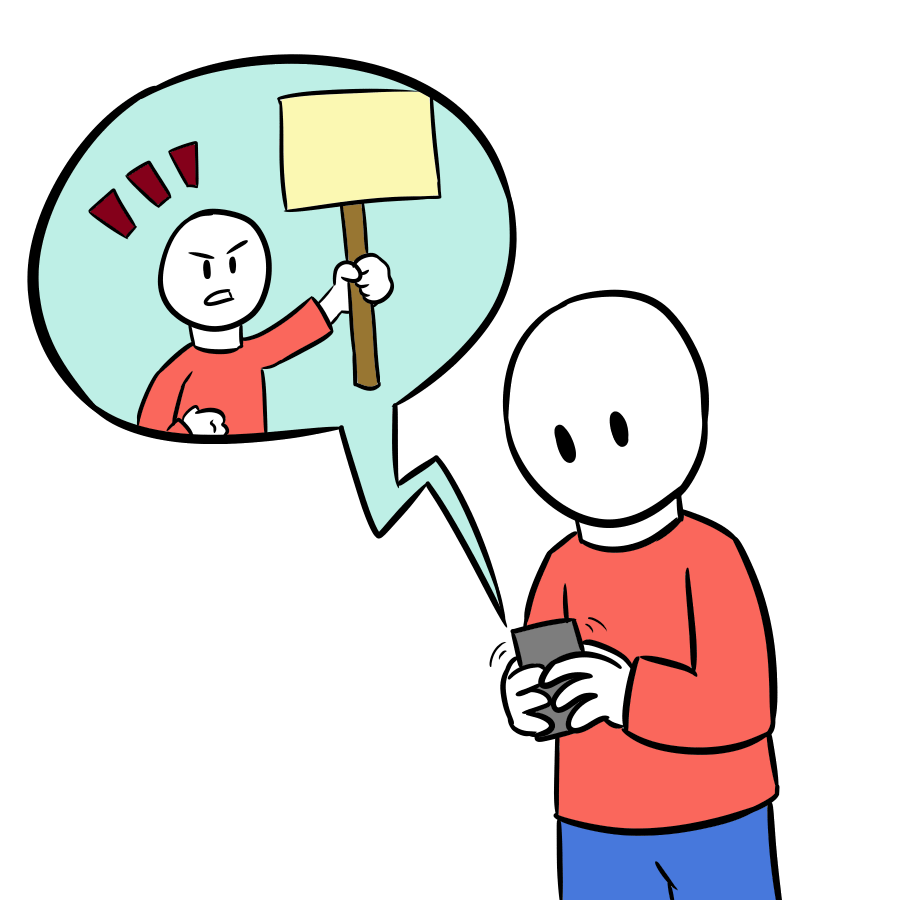
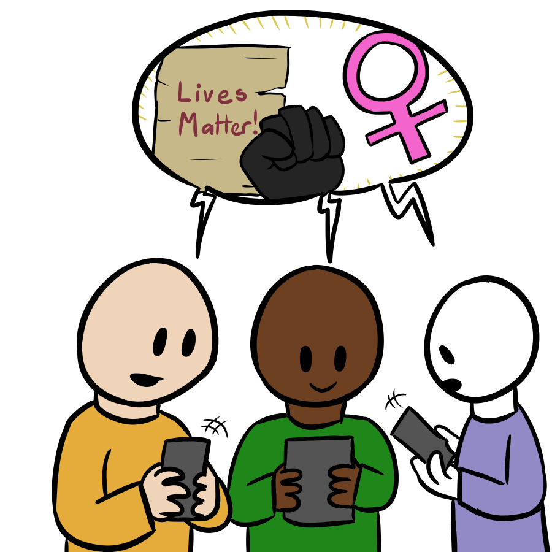

As the years go by, we’ve seen society and technology advance to new heights, things we could only imagine come to reality, new inventions and machines to help aid us grow and live more connected and healthier lives. Ranging from the creation of smart devices to the tools humans use to thrive in society, we’ve come a long way and are continually progressing into an even bigger future. Our society today has grown so much with technology, but that’s not the only crucial tool that’s shaped up who we are today, as society became more advanced, we learned to establish rules, a government, law, and rights for all and rights for what we deserve. With society advancing, different groups came to form, different ideals were made, and different viewpoints were made. Some groups were treated lesser and unfairly compared to others, people were demeaned, made null and seen as useless, which eventually led to the evolution of protests. With protests, people were able to produce their own freedom of expression, letting their own public opinions be heard with words and or actions. Protests normally took the form of physical action, however, with new technology advancing, there are no outlets to turn to. People ask themselves what freedom is really about? Is it having a voice? Is it having human rights for all? With the help of protests, people were able to get their own personal voice out there alongside a voice for others. With social media and new technological sources, this gives a great platform for people to try and express themselves at an easier and detailed pace. With protests, there have been consequential outcomes such as riots, fires, chaos, and more, leading to injury and even deaths which would overcome the whole point of fighting for a political message instead. With social media, protests could evolve into explaining their message more, and even try to recruit people globally from across the world at an easier pace. Social media can also help jump the hurdle over political restrictions that a group in society may be facing, and it could be a gateway to expressing political meanings with others from across the world. Now that freedom and exercise can be expressed digitally instead of just physically, it makes people wonder could political messages and expression of freedom be expressed easier in this manner? Or could organizations use this platform to manipulate meanings to others?
Protests have come in a variety of demographics, with even the youths nowadays participating. During a time where young African Americans were being incarcerated, the organization of The Black Panther Party formed, a youth driven subcultural formation to fight for civil rights for minority groups. As an early example youth activism, the tools in modern society have helped more than ever. Children are learning more and more about the Internet and social media at younger ages, that they begin to use their social connections and media and networking sites to express themselves and fight for their own personal voice. Through the use of persuasion and logic, children and adults are able to dispute their own viewpoints and cultural assumptions into a data collection where social media can connect more and more people with the same viewpoint and ideals. Another example of how social media has been a platform for expression and freedom is with issue with Hong Kong rights. When an e-sports player projected rights for Hong Kong on a stream and got banned from the tournament scene temporarily for it, social media took the storm by talking about the issue of human rights and a restrictive government. While the player’s ban was lifted by a few months, the fight continues online on social media for Hong Kong to be free and for the player to receive his ban removed.
Another perspective to investigate would be the future of technology and how technology will evolve to better define freedom. There is no denying that technology is rapidly developing and those with more access to it will feel more power within themselves. A potential direction of how freedom movements will act upon this will be using this new technology or ways of displaying their message as a new medium in their arsenal. “By creating their own content and participating in social media, they can put significantly more pressure on corporations to engage in responsible behavior.” Social media was a means of communication to get your voice heard in a broader spectrum so if freedom movements were able to harness more of technological advancement, their impact towards society would empower individuals around the globe that share similar values to their message. In doing so, it will increase the amount of support and apply more pressure on those against them.
A great example of freedom movements using technology to its advantages would be Xenofeminism as their purpose is to constantly state how technology is not in favor towards women and they seek to re-engineer the world. Xenofeminism has already taken upon themselves to invest into twitter to get their manifesto across the web so if social media advanced further, it could potentially spread their awareness. “If 'cyberspace' once offered the promise of escaping the strictures of essentialist identity categories, the climate of contemporary social media has swung forcefully in the other direction, and has become a theatre where these prostrations to identity are performed.” Because their whole method of displaying their message is through the digital space, it would be interesting to see how they would develop for new technology. As of right now, Facebook and Twitter are the dominating forces of using social media as a platform for their movement, but a possible future could be when everyone owns a VR headset and new means of social media lies in that space where Xenofeminism can invade and inject their influence through those means.
However, reality is filtered by money and the concept of freedom is hard to achieve when we are in the hands of billion dollar companies. Data is a valuable asset that is passed around between companies like Instagram and Facebook that filters our posts to show what we artificially assumed are interested in. “Inevitably, people have raised the prospect of a backlash about the deal, but the minority has already spat out their dummies, while the majority will continue to use Instagram unfazed.” It is ironic that the power of social media to spread your awareness is also limiting by filtration where if the individual does not seem interested in the video or post by a freedom movement, Facebook or Instagram will automatically assume you do not want to see any more posts from them which will pop less on your feed the next time. Viewports of this advancement will not see a significant change in our society and it becomes increasingly difficult to burst out of this “bubble” as it just increasingly gets bigger when more money is offered, gained, and passed around with big companies.
A concerning topic for the future of freedom would be how people get jobs when applying to big companies and how that “filtering” system does not equally treat people the same. There is no doubt that technology was developed in order to make our lives easier and convenient, but it has no emotional or moral thinking in its system. So when a system like that is used to filter our applicants for a job, if one resume does not meet the specific education needed or gender, they could be automatically disqualified from the position no matter how good of a potential employee that applicant could have been. Examples like these are why freedom movements spark in the first place because it is a real world problem where their existence has automatically made them a minority or given a disadvantage to survive. It then becomes a question of if we could develop a system that can treat individuals equally and acknowledge their existence. That would be a great change in supporting the concept of freedom in social media.
Chung, J. (2015). Social Media and Political Movements: A Computational Exploration. UC Irvine. ProQuest ID: Chung_uci_0030D_13437. Merritt ID: ark:/13030/m5838d9x. Retrieved from https://escholarship.org/uc/item/0zm757dm
Gainous, J., Wagner, K., & Gray, T. (2016). Internet freedom and social media effects: Democracy and citizen attitudes in latin america. Online Information Review, 40(5), 712-738. doi:http://dx.doi.org.libaccess.sjlibrary.org/10.1108/OIR-11-2015-0
Goodswen, D. (2012). What facebook and instagram means for the future of social media: 1]. B & T Weekly, Retrieved from http://search.proquest.com.libaccess.sjlibrary.org/docview/1115117069?accountid=10361
Looft, Ruxandra. “#girlgaze: Photography, Fourth Wave Feminism, and Social Media Advocacy.” Continuum: Journal of Media & Cultural Studies, vol. 31, no. 6, Dec. 2017, pp. 892–902. EBSCOhost, doi:10.1080/10304312.2017.1370539.
McEwan, B., & Flood, M. (2018). Passwords for jobs: Compression of identity in reaction to perceived organizational control via social media surveillance. New Media & Society, 20(5), 1715–1734. https://doi.org/10.1177/1461444817706073
Noor, Al-Deen, Hana S., and John Allen Hendricks. Social Media : Usage and Impact, Lexington Books, 2011. ProQuest Ebook Central, https://ebookcentral-proquest-com.libaccess.sjlibrary.org/lib/sjsu/detail.action?docID=795614.
Normile, Dennis. “Monsanto Donates Its Share of Golden Rice.” Science. American Association for the Advancement of Science, August 11, 2000. https://science.sciencemag.org/content/289/5481/843.